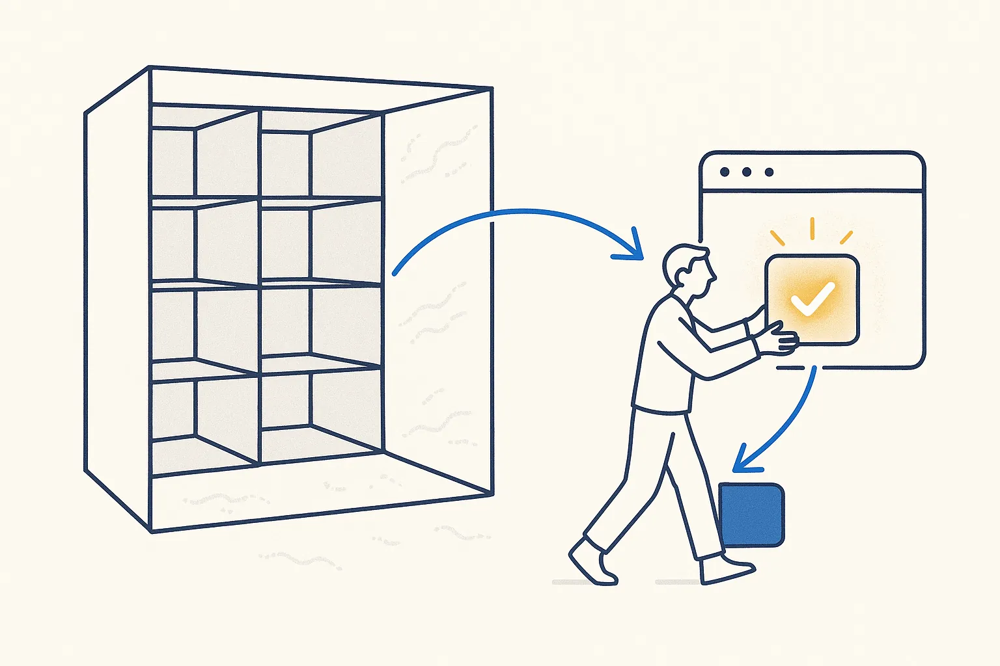

You Pay for the Whole App and Use a Fraction of It
Why a small custom app often beats a standard package — and when it does not
By Jaco van der Laan

Open the menu of any standard business package and count the features you have used this year. For most small companies it is a small share. The rest you still pay for — in licence fees, in screens that get in the way, in training, in updates that move the button you did use.
The fraction is the real requirement
A standard package is built for every customer at once. Your company needs the overlap between that package and the way you actually work. That overlap is often small, and it is exactly what you would build if you built it yourself.
I saw this first in data modeling. Heavy modeling tools cost a lot per seat, and most people who use them touch a small part: draw entities, link them, generate the database, print a diagram. On Breakthrough Modeling I made the case for building that fraction yourself: vibe-code the app from clear specs, keep only the functions you used, and generate the diagrams from the model and its rules.
The same holds for the rest of the business. My CRM does many things; what I use is people, organisations, projects and a sense of who I am losing touch with. That is what my own cockpit now does, with an exit date before the next renewal. A desktop asset manager copied every image into its own library; what I needed were tags next to my files and a viewer that only reads them.
Why this is possible now
Building the fraction used to need a developer and months. Now an AI writes most of the code in days, if you give it three things:
- A clear spec of the fraction you use — not a wish list.
- A proven data model to build on, so you do not invent customers, orders and agreements from scratch.
- Building blocks — list, table, cards, timeline, filters, a cockpit — so the second app reuses the first.
With those three, a new screen in my own system is mostly configuration. Without them, every app starts from zero and the speed of AI turns into a pile of slightly different copies.
When to keep the standard package
Building your own is not always right. Keep the package when:
- The rules are not yours. Bookkeeping, payroll and tax follow the law and your accountant; I keep the accounting package as the official record and only own the booking rules and a queryable copy.
- Many people must work in it at once and you have no time to build access control and support.
- The fraction is most of it. If you really use 80% of a package, it is a good package for you.
The question to ask
Not "build or buy?", but: which fraction do we use, and who should own it? Own the data and the rules always. Own the screens when the fraction is small, specific to how you work, or something you would like to change every month.
On a Build Day we start with exactly that fraction: one list, one question, one screen — built on your own data, the same afternoon.
Use cases in this article
- Replacing a CRM before the renewal date
- Leaving an asset manager that copies everything
- Building blocks that make the next app quick
- A data model in an afternoon, from a proven pattern
Concepts behind it
- Deliberate Simplicity — Make each part as plain as it can be without losing what matters — reuse only the fraction you actually need, and strip the rest.
- Own the Layer or Rent the Feature — Every knowledge product answers two questions: who maintains it, and is it a layer of its own or a feature of something else. The answers decide what you can build on.
- The Model Is the Easy Part — Everyone can rent the same model. What surrounds it — context, rules, memory, verification — is the only part that can be yours.
- Vibe Coding — Use AI to quickly build real things — especially nice interfaces on top of the metadata — to explore, prototype and give people a way in. Great for experimenting; just don't ship the unspecified, ungated style to production.